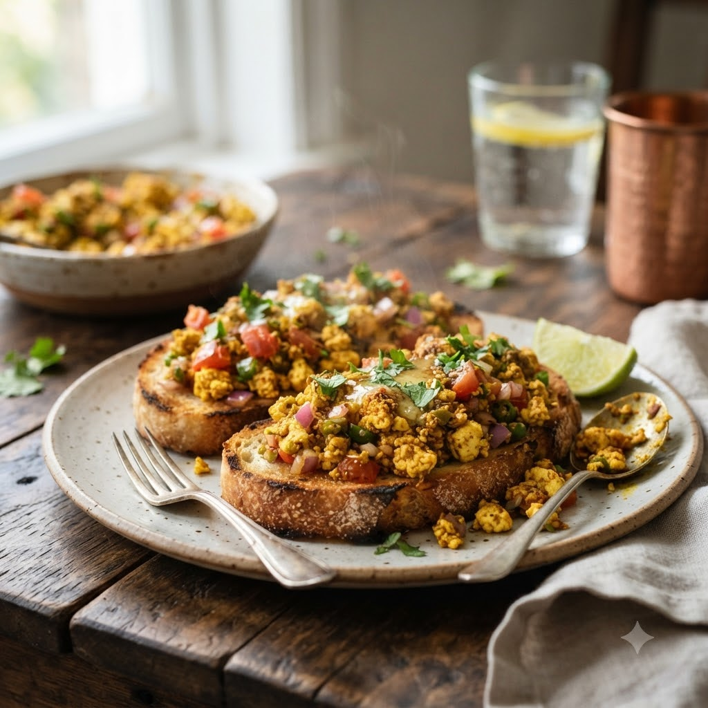

Paneer Bhurji Toast

Paneer Bhurji Toast
Airfryer – Bake 180°C 9 min — Serves 2
Vegetarian • High-Protein • Everyday
Ingredients
- 200g paneer, crumbled
- 4 bread slices
- 1/4 cup chopped onion, tomato, capsicum
- 1/4 tsp turmeric (haldi)
- 1/2 tsp red chilli powder (lal mirch powder)
- 1 tbsp butter, softened
- Salt to taste
- Chopped coriander (dhania)
Method
1Preheat: Preheat the Airfryer to 180°C for 4 minutes before adding the food to the basket.
2Mix crumbled paneer with chopped vegetables, turmeric, chilli powder, salt and coriander.
3Butter the bread slices and pile the paneer mixture on top.
4Arrange in the basket in a single layer.
5Bake at 180°C for 9 minutes until the edges of the bread are crisp and the topping is warmed through.